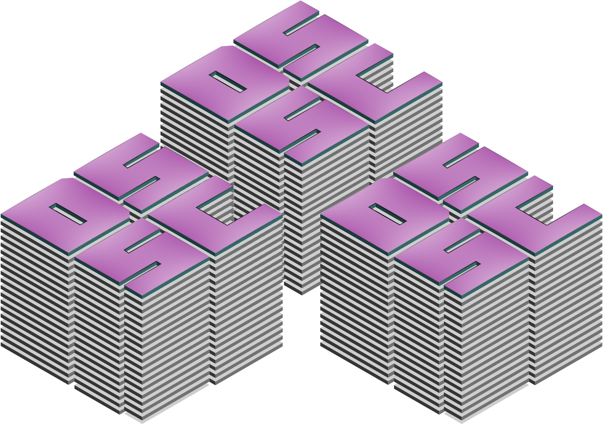

dirty south
supercomputing
A Lifetime of Computer Science
I taught myself ATARI BASIC and wrote my first program at 7. I sold my
first code at 12, and was first employed as a full-time programmer at 17.
I have since then devoted myself to the study and practice of computer
science, especially high-performance code operating in constrained
environments. Excepting our honeymoon, I've written code in the UNIX
environment every week for over twenty years.
My patches live in well over fifty open source projects. I've deployed
product at startups, Fortune 500 enterprises, academic institutions, and
government agencies, in environments ranging from bare-metal 8-bit
microprocessors to megacores, including the Google fleet and Oak Ridge's
Summit supercomputer (at that time the fastest machine in the world). Many
of the web pages you visit today will have been touched by at least one
line of my code.
© 2019 Dirty South Supercomputers and Waffles, LLC
855 Peachtree St NE #3204, Atlanta, GA 30308